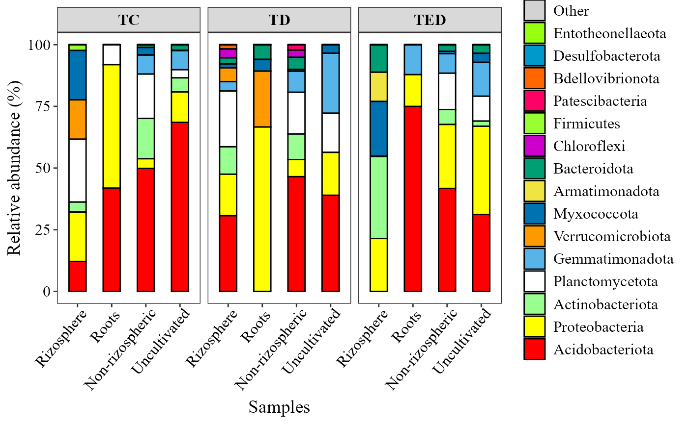
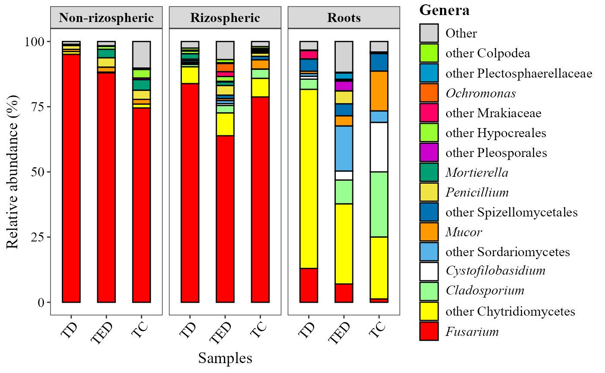
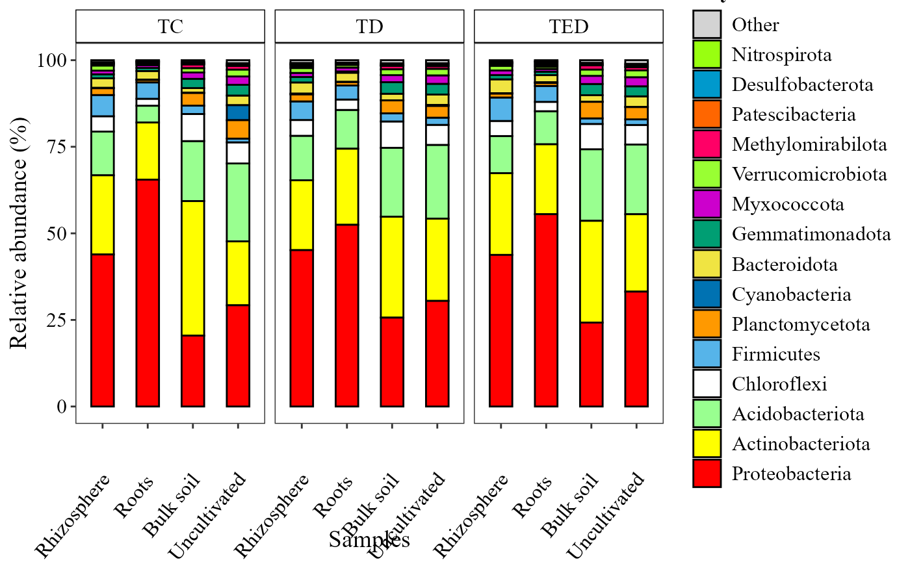
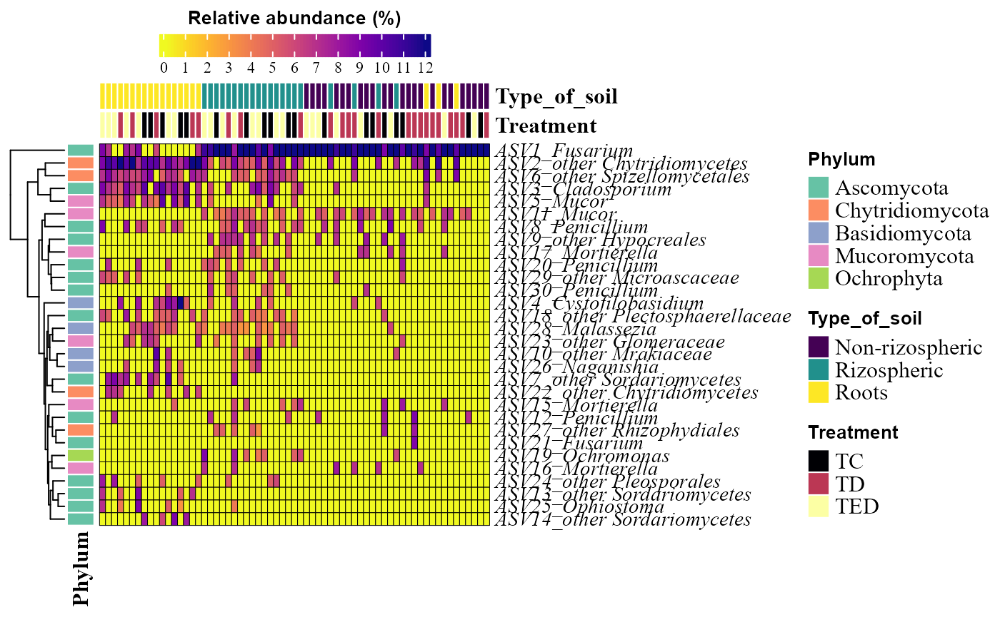
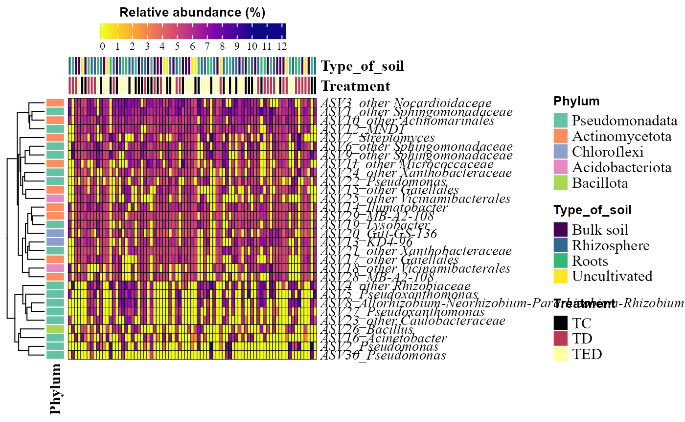
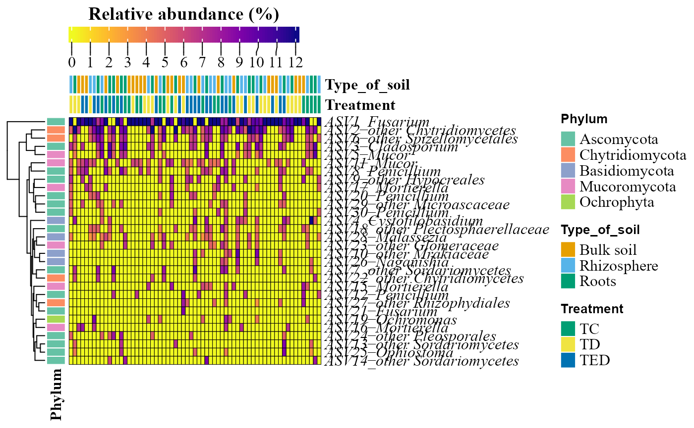

For this example, we will use metabarcoding data, specifically 16S for bacteria and 18S for fungi.
The data is taken from:
For 16S: Hereira-Pacheco, S.E., Navarro-Noya, Y.E. & Dendooven, L. The root endophytic bacterial community of Ricinus communis L. resembles the seeds community more than the rhizosphere bacteria independent of soil water content. Sci Rep 11, 2173 (2021). https://doi.org/10.1038/s41598-021-81551-7] For 18S: Hereira-Pacheco, S. E., Estrada-Torres, A., Dendooven, L., & Navarro-Noya, Y. E. (2023). Shifts in root-associated fungal communities under drought conditions in Ricinus communis. Fungal Ecology, 63, 101225.
First, Let’s call the MicroBioMeta package:
Let’s call other packages needed:
tidyverse
is used for all the data wrangling and visualizations and qiime2R for
calling .qza objects as output from QIIME2.
Then, Load the data and reformat. Notice the data we are loading came
from processing in QIIME2
, so the read_qza function is used to import this data into
R, also we could export the data within QIIME2
and then import the data as .txt.
bacteria_table <- qiime2R::read_qza("../man/Data/dada2.200.trimmed.single.filtered.cleaned.qza")$data %>% as.data.frame()
fungi_table <- qiime2R::read_qza("../man/Data/merge_table_240_noplant_filtered_nous.qza")$data %>%
as.data.frame()
metadata <- read.delim("../man/Data/FINALMAP.txt", check.names = F) %>% rename(SAMPLEID =`#SampleID`) %>%
filter(Month == "2") %>%
mutate(Treatment = factor(
case_when(
Treatment == 1 ~ "TC",
Treatment == 2 ~ "TD",
Treatment == 3 ~ "TED",
TRUE ~ as.character(Treatment)
),
levels = c("TC", "TD", "TED")
))
metadata2 <- read.delim("../man/Data/FINALMAP18S.txt", check.names = F)%>% rename(SAMPLEID=`#SampleID`)%>%
mutate(
Treatment = factor(
case_when(
Treatment == 1 ~ "TC",
Treatment == 2 ~ "TD",
Treatment == 3 ~ "TED",
TRUE ~ as.character(Treatment)
),
levels = c("TC", "TD", "TED")
)
)
bacteria_table_filter <- bacteria_table[match(metadata$SAMPLEID, colnames(bacteria_table)), ]
taxonomy_bacteria <- read_qza("../man/Data/taxonomy_dada2.200.trimmed.single.seqs.qza")$data %>%
as.data.frame() %>% rename(taxonomy = Taxon) %>%
dplyr::select(-Confidence) %>%
column_to_rownames(var = "Feature.ID")
taxonomy_fungi <- read_qza("../man/Data/taxonomy_blast_240_0.97.qza")$data %>% as.data.frame() %>%
rename(taxonomy = Taxon) %>%
dplyr::select(-Consensus) %>%
column_to_rownames(var = "Feature.ID")Pre-processing data
In order to use the data as input for functions of
MicroBioMeta should contain a biom format with the column
of taxonomy at the end.
In case your data is not in this format, we could use the
merge_feature_taxonomy function to set the data in this
format. This format will allow the use of taxonomy identity without load
another object into R.
table_bac <- merge_feature_taxonomy(table = bacteria_table_filter,
taxonomy = taxonomy_bacteria)## Warning in merge_feature_taxonomy(table = bacteria_table_filter, taxonomy =
## taxonomy_bacteria): 6049 taxonomy IDs are not present in the table and will be
## excluded from the result.
table_fung <- merge_feature_taxonomy(table = fungi_table,
taxonomy = taxonomy_fungi)## Warning in merge_feature_taxonomy(table = fungi_table, taxonomy =
## taxonomy_fungi): 17 taxonomy IDs are not present in the table and will be
## excluded from the result.Composition exploration
MicroBioMeta has several functions to explore
composition, taxonomic identity, and abundance. Let’s explore each of
them.
Abundance barplots
Abundance barplots are useful to identify patterns in community
composition based on taxonomic identity.
This function generates stacked barplots of relative abundances using an
abundance table and a metadata file as input.
The taxonomy_db parameter specifies the taxonomic
reference database used for taxonomic assignment (e.g., SILVA, GTDB,
UNITE).
The x_col parameter indicates the column in the metadata
used for grouping samples along the x-axis, while facet_col
defines the metadata column used to split the plot into facets.
The level parameters allow us to choose the taxonomic
level to collapse.
The top_n_groups controls the number of most abundant
taxa displayed in the barplot.
If add_remain = TRUE, the relative abundances are
completed to 100% by adding a gray category representing the remaining
taxa not explicitly displayed; if FALSE, only the selected
taxa are shown.
The label parameter defines the legend title displayed in
the plot.
Finally, when save.table = TRUE, the function also
returns a table containing the relative abundances (percentages) used to
generate the plot.
abundance_barplot(table = table_bac,
metadata = metadata,
taxonomy_db = "silva",
level = "phylum",
top_n_groups = 15,
x_col = "Type_of_soil",
facet_col = "Treatment",
add_remained = TRUE,
label = "Phylum",
save_table = FALSE)+
theme(axis.text.x = element_text(angle = 50, hjust = 0.95))
abundance_barplot(table = table_fung,
metadata = metadata2,
x_col = "Treatment",
facet_col = "Type_of_soil",
add_remained = TRUE,
label = "Genera",
save_table = FALSE)+
theme(axis.text.x = element_text(angle = 50, hjust = 0.95))
Abundance heatmaps
The input table must be a data frame containing
taxonomic features (rows) and samples (columns).
The metadata argument provides sample-level information
used to annotate the heatmap.
The parameters condition1, condition2, and
condition3 define up to three metadata variables to be
displayed as horizontal annotations above the heatmap.
Custom color palettes for each annotation can be specified using
colors_condition1, colors_condition2, and
colors_condition3, respectively.
Legend titles for these annotations can be customized with
name_legend_condition1,
name_legend_condition2, and
name_legend_condition3.
The top_n argument controls the number of most abundant
features included in the heatmap.
If cluster = TRUE, rows are hierarchically clustered; if
FALSE, features are ordered by decreasing relative
abundance.
The show_column_names parameter determines whether sample
names are displayed in the heatmap.
abundance_heatmap_plot(table = table_bac,
metadata = metadata,
top_n = 30,
show_column_names = FALSE,
condition1 = "Type_of_soil",
condition2 = "Treatment")
abundance_heatmap_plot(table = table_fung,
metadata = metadata2,
top_n = 30,
show_column_names = FALSE,
condition1 = "Type_of_soil",
condition2 = "Treatment")
Alpha diversity
alpha_hill_corrplot(table = table_bac)
alpha_hill_corrplot(table = table_fung)
alpha_hill_plot(table = table_bac,
metadata = metadata%>% filter(SAMPLEID %in% colnames(table_bac)),
x_col = "Treatment",
fill_col = "Treatment",
facet_by = "Type_of_soil",
facet_orientation = "vertical",
save_table = FALSE)
alpha_hill_plot(table = table_fung,
metadata = metadata%>% filter(SAMPLEID %in% colnames(table_fung)),
x_col = "Treatment",
fill_col = "Treatment",
facet_by = "Type_of_soil",
facet_orientation = "horizontal",
save_table = FALSE)
Beta diversity
beta_div_plot(table = table_bac,
metadata = metadata,
group_col = "Type_of_soil",
shape_col = "Treatment")
beta_div_plot(table = table_fung,
metadata = metadata2,
group_col = "Type_of_soil",
shape_col = "Treatment",distance = "aitchison", ordination = "NMDS")## Run 0 stress 0.1631777
## Run 1 stress 0.1728602
## Run 2 stress 0.1628665
## ... New best solution
## ... Procrustes: rmse 0.03182413 max resid 0.2274498
## Run 3 stress 0.1686813
## Run 4 stress 0.1765663
## Run 5 stress 0.1636684
## Run 6 stress 0.1639759
## Run 7 stress 0.1746675
## Run 8 stress 0.1856753
## Run 9 stress 0.4049748
## Run 10 stress 0.1688712
## Run 11 stress 0.1781419
## Run 12 stress 0.173531
## Run 13 stress 0.1718962
## Run 14 stress 0.1728286
## Run 15 stress 0.1723131
## Run 16 stress 0.1706585
## Run 17 stress 0.1675811
## Run 18 stress 0.1729734
## Run 19 stress 0.1708359
## Run 20 stress 0.1721451
## Run 21 stress 0.1700335
## Run 22 stress 0.173577
## Run 23 stress 0.1816426
## Run 24 stress 0.1796804
## Run 25 stress 0.164311
## Run 26 stress 0.1684441
## Run 27 stress 0.1763023
## Run 28 stress 0.1632005
## ... Procrustes: rmse 0.1056509 max resid 0.3157677
## Run 29 stress 0.171395
## Run 30 stress 0.1768256
## Run 31 stress 0.1701486
## Run 32 stress 0.1746599
## Run 33 stress 0.1779963
## Run 34 stress 0.1635891
## Run 35 stress 0.1649816
## Run 36 stress 0.1727578
## Run 37 stress 0.1737838
## Run 38 stress 0.1740852
## Run 39 stress 0.1676496
## Run 40 stress 0.1695613
## Run 41 stress 0.172919
## Run 42 stress 0.1767733
## Run 43 stress 0.1767373
## Run 44 stress 0.1711912
## Run 45 stress 0.1657727
## Run 46 stress 0.1771823
## Run 47 stress 0.1674608
## Run 48 stress 0.1720225
## Run 49 stress 0.1774088
## Run 50 stress 0.1730656
## Run 51 stress 0.1663698
## Run 52 stress 0.1695002
## Run 53 stress 0.1716283
## Run 54 stress 0.173787
## Run 55 stress 0.1734042
## Run 56 stress 0.1706982
## Run 57 stress 0.1722677
## Run 58 stress 0.1734106
## Run 59 stress 0.177616
## Run 60 stress 0.1631789
## ... Procrustes: rmse 0.03185151 max resid 0.2283518
## Run 61 stress 0.1732342
## Run 62 stress 0.1748556
## Run 63 stress 0.1673888
## Run 64 stress 0.1654722
## Run 65 stress 0.1744983
## Run 66 stress 0.1631101
## ... Procrustes: rmse 0.08616228 max resid 0.3197007
## Run 67 stress 0.176383
## Run 68 stress 0.173808
## Run 69 stress 0.1670752
## Run 70 stress 0.1690001
## Run 71 stress 0.1659428
## Run 72 stress 0.1730743
## Run 73 stress 0.1737945
## Run 74 stress 0.1714786
## Run 75 stress 0.1721985
## Run 76 stress 0.1625329
## ... New best solution
## ... Procrustes: rmse 0.05087605 max resid 0.3060826
## Run 77 stress 0.1679206
## Run 78 stress 0.1638579
## Run 79 stress 0.165161
## Run 80 stress 0.1754281
## Run 81 stress 0.1803768
## Run 82 stress 0.1708012
## Run 83 stress 0.4041509
## Run 84 stress 0.1776208
## Run 85 stress 0.1743457
## Run 86 stress 0.1764971
## Run 87 stress 0.1754817
## Run 88 stress 0.1672278
## Run 89 stress 0.1673222
## Run 90 stress 0.1715581
## Run 91 stress 0.1722379
## Run 92 stress 0.1649475
## Run 93 stress 0.1741702
## Run 94 stress 0.1707411
## Run 95 stress 0.1700221
## Run 96 stress 0.1713041
## Run 97 stress 0.1731016
## Run 98 stress 0.1777061
## Run 99 stress 0.1792984
## Run 100 stress 0.1732426
## *** Best solution was not repeated -- monoMDS stopping criteria:
## 7: no. of iterations >= maxit
## 93: stress ratio > sratmax